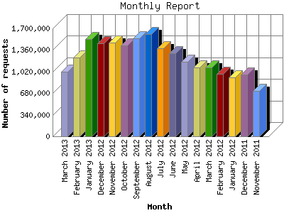

Analog 5.1
Analog 5.1 Report Magic 2.21
Report Magic 2.21The Monthly Report identifies activity for each month in the report
time frame. Remember that each page hit can result in several server requests
as the images for each page are loaded.
Note: Depending on the
report time frame, the first and last months may not represent a complete
month's worth of data, resulting in lower hits.

| Month | Number of requests | Number of page requests | |
|---|---|---|---|
| 1. | November 2011 | 713,268 | 195,114 |
| 2. | December 2011 | 969,260 | 326,674 |
| 3. | January 2012 | 924,404 | 315,688 |
| 4. | February 2012 | 984,534 | 341,455 |
| 5. | March 2012 | 1,085,188 | 423,470 |
| 6. | April 2012 | 1,086,740 | 382,240 |
| 7. | May 2012 | 1,176,062 | 552,554 |
| 8. | June 2012 | 1,305,307 | 576,637 |
| 9. | July 2012 | 1,392,303 | 753,357 |
| 10. | August 2012 | 1,615,985 | 917,924 |
| 11. | September 2012 | 1,547,417 | 880,334 |
| 12. | October 2012 | 1,433,698 | 756,883 |
| 13. | November 2012 | 1,476,382 | 680,259 |
| 14. | December 2012 | 1,465,923 | 701,317 |
| 15. | January 2013 | 1,534,758 | 783,949 |
| 16. | February 2013 | 1,240,279 | 748,634 |
| 17. | March 2013 | 1,018,883 | 539,468 |
Most active month August 2012 : 917,924 pages sent. 1,615,985 requests handled.
Monthly average: 580,938 pages sent. 1,233,552 requests handled.
This report was generated on March 26, 2013 00:52.
Report time frame November 8, 2011 00:00 to March 26, 2013 07:35.
| Web statistics report produced by: | |
| Analog 5.1 | Report Magic 2.21 |